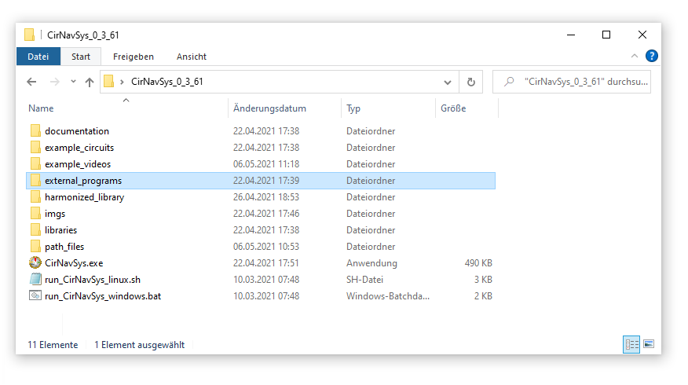
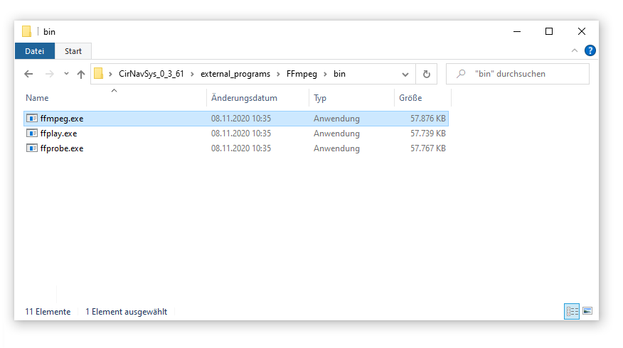
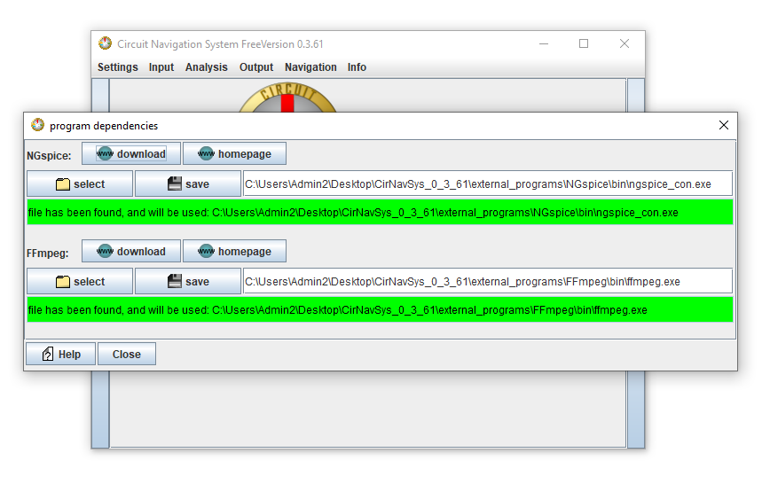
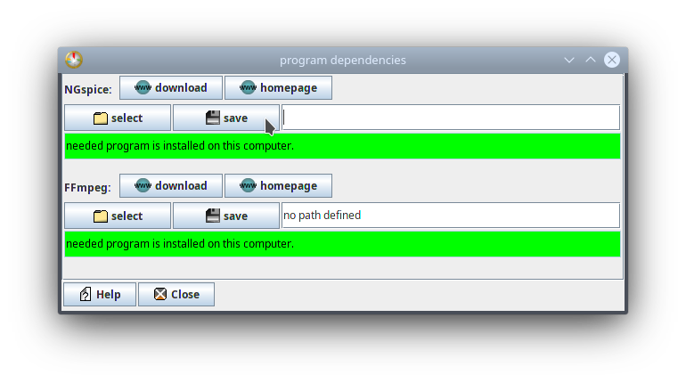

How repair the video creation
Content
Chapter 1: find the correct file
Chapter 2: set the correct path
Chapter 3: settings for Unix/Linux-Users
Chapter 1: find the correct file
The video creation is based on the external tool FFmpeg. In order to create videos, you need to install and link FFmpeg. (See also the this introduction.)
That's why you need to find the ffmpeg file, called ffmpeg.exe
You can either search it in your program folder, or you can download the file from ffmpeg.org
It should be in the folder, where you have downloaded the Animated CAD as shown in the following two images: (click to increase, hover to see description):


The first image shows the folder of the Animated CAD. The second image shows the subfolder with the ffmpeg file. You should find the file on your computer as well, but if you don't find it, then you can download it from ffmpeg.org
Chapter 2: set the correct path
You can set the path in the "dependencies"-dialog. You can open that dialog from the settings menu, as shown in the following image:
After you have opened the dialog, it should look like this image:

Chapter 3: Settings for Unix/Linux-Users
The infos above were for windows computers. The correct settings for Unix are similar:
You also need to open the dialog for the dependencies. But instead of linking to a windows executable file like ffmpeg.exe, you need to download ffmeg for unix via the shell command: sudo apt-get install ffmpeg or alternatively: sudo apt install ffmpeg (see also at setup documentation). Alternatively you might download ffmpeg from your Ubuntu-Software-Center or similar graphical program.
After you have installed ffmpeg, remove all text from the text field and click on the save button:
